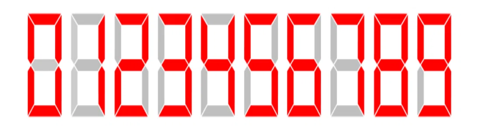
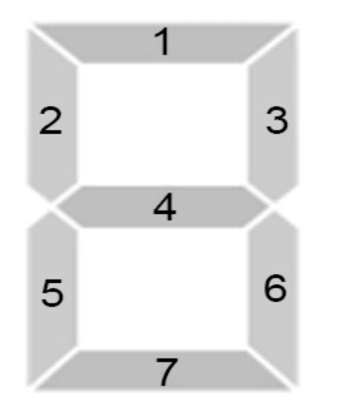

有一个带有数字的记分牌，这些数字以“七段数码管”形式显示：每个数字由7个段组成，每个段上都是一个发光的灯，可以通过打开或关闭不同段上的灯以显示不同的数字。下面的图片显示了所有10个十进制数字的显示方式：

记分牌上一共有 n 个数字，其中可能有一些位置显示的不是 0 到 9 的合法数字。每个数字的七个段上开关的状态已经给出 (0 表示关着，1 表示开着)。现要在当前状态基础上再打开 恰好 k 个段，你的任务是确定最大可能出现的数字是多少？允许最终得到的数字包括前导零。
输入描述：
第一行包含两个整数 n (1 ≤ n ≤ 2000) 和 k (0 ≤ k ≤ 2000)，接下来的 n 行，每行包含一个长度为 7 的二进制数字串，其中第 i 行编码了计分板上的第 i 位数字。计分板上的每个数字由 7 个段组成，按照下图编号，长度为 7 的二进制字符串将指定哪些段目前发光，第 i 位为 0 表示第 i 条线段不发光，为 1 表示发光。

因此，序列 "1110111", "0010010", "1011101", "1011011", "0111010", "1101011", "1101111", "1010010", "1111111", "1111011" 依次编码了数字 0 到 9。
输出描述：
仅有一个数，表示可以通过开启恰好 k 个发管段能够获得的最大数值，如果无法通过开启恰好 k 个灯得到一个正确的数字，则输出 -1。
| 样例1输入 | 样例1输出 | 样例2输入 | 样例2输出 | 样例3输入 | 样例3输出 |
|---|---|---|---|---|---|
|
1 7 0000000 |
8 |
2 5 0010010 0010010 |
97 |
3 5 0100001 1001001 1010011 |
-1 |
题目信息解读：给出了0到9的10个01串，容易想到打表，预处理为常量，避免每次要推各段编号的数字，可以用数组 dig 记录每个数字对应的各段应该亮灯的状态，输入的每一行对应一位数字各段的亮灯状态。因为只能做开灯操作，所以每一位数字的合法性检测，只能在某一段原本熄灭，可以通过打开变为合法数字才为可行操作，为了处理方便我们需要预处理每一位数字，通过多少次开灯操作才能合法，相当于是先求出每一位数字的“花费”，又因为是恰好 k 次操作，相当于是总花费，所以容易想到使用背包型 DP 解决恰好的问题。
为了保证数字最大，容易想到从左往右（高位开始）贪心，尽可能先放更大的数字。如果直接从最高位开始做贪心，高位上尽可能放更大的数字，这会导致前面的一些高位，把 k 次开灯机会用光了，后面的位上出现无解的情况（不通过开灯操作就无法成为合法的数字）——局部最优毁掉全局可行性。所以需要先回答一个问题：“从第 i 位开始，后面的位恰好用掉 j 次开灯机会，有解到底有没有可能？”。如果有解，在第 i 位之前才能放心使用 k-j 次开灯机会。所以，必须使用可行性 DP 来解决这个问题。
定义 cost[i][j] 表示第 i 位上放置数字 d 需要新开灯的次数，即对第 i 位目标数字 d (0~9):
for(int d=0;d<10;d++)
{
int c=0; bool ok=true;
for(int j=0;j<7;j++) //枚举每个发管段上灯
{ //如果当前段是开着的，而目标数字 d 需要关灯 →则是非法的
if(s[i][j]=='1' && dig[d][j]=='0') {ok=false; break; }
if(s[i][j]=='0' && dig[d][j]=='1') c++; //需要开灯
}
cost[i][d]=ok? c:-1;
}定义 dp[i][j] = true 表示第 i 位到第 n-1 位，恰好再开 j 个灯段，能全部变成合法数字。初始化 dp[n][0] = true，没有数字了，要求开灯恰好 k 次，所以如果还剩开灯次数不合法就赋值为不可行，即 dp[n][j > 0] = false。
对于数字 d 从 0 到 9，cost[i][d] != -1 且 j >= cost[i][d]，同时 dp[i+1][j - cost[i][d]] 为真，则 dp[i][j] 为真。从后往前推，答案的存在性就是 dp[0][k]。
dp[n][0]=true; // 可行性 DP, 从后往前
for(int i=n-1;i>=0; i--) // 从右往左推: 第 n-1 位时最低位
{ //dp[i][j] 表示从第 i 位到末尾, 花费 j 次开灯机会是否可行
for(int j=0;j<=k;j++)
{
for(int d=0;d<10;d++)
{
int x=cost[i][d]; // 第 i 位变为数字 d 花费 x 次开灯
if(x>=0 && j>=x && dp[i+1][j-x])
{ //第 i 位花 x 次, 后面花 j-x 次,
dp[i][j]=true; //说明共花 j 次可行
break; // 是可行性：只要有一个 d 可行即可
}
}
}
}复杂度分析：
时间复杂度：O(n \times k \times 10) = 2000 \times 2000 \times 10 = 4 \times 10^7
空间复杂度：2001 \times 2001 \approx 4MB。
有了dp这张“未来可行性表”，就可以放心地从高位到低位用贪心的方法放置尽可能大的数字：
int m=k;
for(int i=0;i<n;i++)
{//从最高位开始，尽可能放大数字，才能保证可行的字典序最大
for(int d=9;d>=0;d--)
{// 所以从 9 试到 0 ，找到即停
int x=cost[i][d];
if(x>=0 && m>=x && dp[i+1][m-x])
{
ans.push_back(char('0'+d)); // 答案的第 i 位放数字 d
m-=x;
break; // 取到最大的可行数字就锁定这一位
}
}
}这一步的正确性解释：
dp[i+1][m-x]，即“取了它之后，后面仍然可行”，所以贪心不会把后面的路堵死；#include<bits/stdc++.h>
using namespace std;
const int N=2001;
char s[N][10]; //s[i][j]: 第 i 位数的第 j 个发光段上灯的开关状态
int cost[N][N]; //cost[i][d]: 第 i 位变成数字 d 需新开灯的个数，-1 为不可能
string dig[10] = {"1110111", "0010010", "1011101", "1011011",
"0111010", "1101011", "1101111", "1010010", "1111111", "1111011"};
bool dp[N][N]; // dp[i][j]: i..n-1 位恰好花 j 个开关是否可行
int main()
{
int n,k;
cin>>n>>k;
for(int i=0;i<n;i++) cin>>s[i];
for(int i=0;i<n;i++)
{//枚举每一位数字，从高位开始处理
for(int d=0;d<10;d++)
{
int c=0; bool ok=true;
for(int j=0;j<7;j++) //枚举每个发管段上灯
{// 如果当前段是开着的，而目标数字 d 需要关灯 →则是非法的
if(s[i][j]=='1' && dig[d][j]=='0') {ok=false; break; }
if(s[i][j]=='0' && dig[d][j]=='1') c++; //需要开灯
}
cost[i][d]=ok? c:-1;
}
}
dp[n][0]=true;
for(int i=n-1;i>=0;i--)
{
for(int j=0;j<=k;j++)
{
for(int d=0;d<10;d++)
{
int x=cost[i][d];
if(x>=0 && j>=x && dp[i+1][j-x])
{
dp[i][j]=true;
break;
}
}
}
}
if(!dp[0][k]) {cout<<-1;return 0;} //对所有位 k 次开灯不可行
string ans; // 贪心回放：从左到右，每位取尽可能大的数字
int m=k;
for(int i=0;i<n;i++)
{//从最高位开始，尽可能放大数字，才能保证可行的字典序最大
for(int d=9;d>=0;d--)
{
int x=cost[i][d];
if(x>=0 && m>=x && dp[i+1][m-x])
{
ans.push_back(char('0'+d));
m-=x;
break;
}
}
}
cout<<ans;
return 0;
}dp[n][j] (j>0) 必须为 false，否则会把没用完的开关当合法。dp[0][k]。dp[i+1][m-c]，只按 cost 从小到大 / 从大到小选，导致后面凑不出恰好 k。